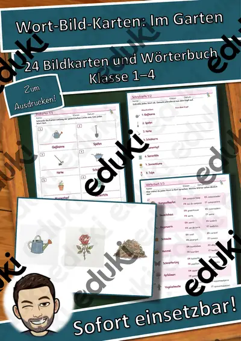
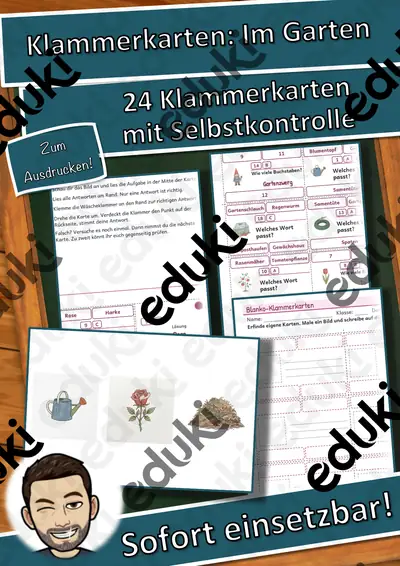
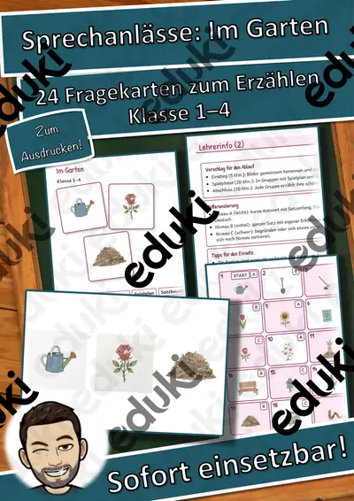
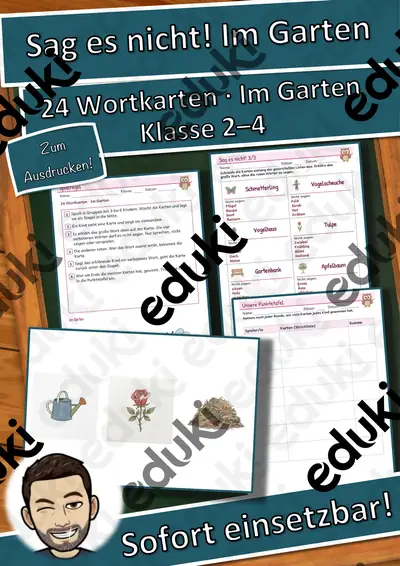
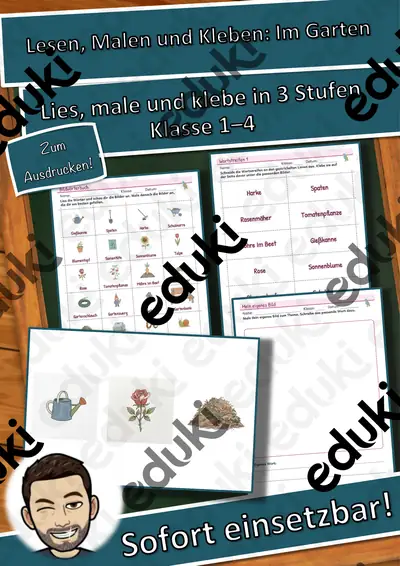

Werden und Vergehen – ein Jahr im Garten von Oma Rosi – Lesespurgeschichte mit Rätselaufgaben (Klasse 3)
Werden und Vergehen – ein Jahr im Garten von Oma Rosi – Lesespurgeschichte Ethik (Klasse 3/4)Begib dich mit deiner Klasse auf eine behutsame Lesespur über das Werden und Vergehen! Frieda und Lukas verbringen einen Tag im großen Garten ihrer Oma Rosi: Im Gewächshaus keimen winzige Samen, im Vogelnest piepsen frisch geschlüpfte Küken, der alte Apfelbaum trägt Früchte mit Kernen für neue Bäume, und in der Erinnerungsecke denken sie gemeinsam mit Oma an ihren verstorbenen Hund Bello. Auf der Gartenbank zeigt Oma ein Fotoalbum – von ihrer Babyzeit bis heute. Und die kleine Raupe Rubi? Sie ist am Ende ein bunter Schmetterling! Am Ende jedes Abschnitts verrät ein Hinweis den nächsten Ort auf dem Garten-Plan – nur wer richtig liest und mitdenkt, findet den Weg und sammelt alle geheimen Buchstaben zum Lösungswort.
Die perfekte Lesespur für den ETHIKUNTERRICHT der 3. und 4. Klasse: Sie verbindet motivierendes, sinnentnehmendes Lesen mit einfühlsamen Gesprächsanlässen über den Kreislauf des Lebens, über Abschied und Erinnerung – tröstlich und kindgerecht erzählt. Das Material ist SOFORT EINSETZBAR und in DREI DIFFERENZIERUNGSSTUFEN (leicht ★ / mittel ★★ / schwer ★★★) angelegt, sodass alle Kinder einer Klasse am selben Thema arbeiten können.WICHTIG: Das komplette Material ist sowohl in FARBE als auch in SCHWARZ-WEISS enthalten – ideal zum Sparen von Druckkosten.DAS IST ENTHALTEN
- Lesespurgeschichte in 3 Niveaus (leicht, mittel, schwer)
- farbiger Garten-Plan als Suchkarte
- Hörverstehen mit QR-Code zur MP3 (selbstständiges Hören mit Kopfhörern)
- vier Aufgaben auf dem Weg: ein Zuordnungs-Rätsel, ein Quiz, eine Rechenaufgabe und ein Steckbrief
- Rätselseite (Wörter-Suchsel + Wissensfragen)
- Ausmalbild zum Thema
- ausführliches Lösungsblatt für die Lehrkraft
- alles zusätzlich als komplette Schwarz-Weiß-VarianteSO FUNKTIONIERT DIE LESESPURDie Kinder lesen ab START, entnehmen dem Text einen Hinweis auf einen Ort im Garten, suchen ihn auf dem Plan und lesen bei dieser Station weiter. An jeder richtigen Station gibt es einen Sammelbuchstaben. Eingebaute Sackgassen (Schuppen, Regentonne, Wäscheleine, Sandkasten) dienen der Selbstkontrolle. Am Ende werden die Buchstaben umgestellt und ergeben ein geheimes Lösungswort. (Die Lösungen sind selbstverständlich nur im Lösungsblatt für die Lehrkraft enthalten.)INHALTLICHER SCHWERPUNKTAlles Leben hat einen Anfang und ein Ende – und ist Teil eines großen Kreislaufs. Die Kinder beobachten, wie aus Samen Pflanzen werden, aus Eiern Küken, aus Blüten Äpfel mit neuen Kernen und aus Laub fruchtbare Erde. Im Fotoalbum vergleichen sie verschiedene Lebensalter und machen sich ihre eigene Entwicklung bewusst. Behutsam nähern sie sich der Endlichkeit des Lebens: Am Beispiel des verstorbenen Hundes erfahren sie, dass Trauer erlaubt ist, dass Erinnerungen bleiben und dass Menschen ganz Verschiedenes darüber glauben, was nach dem Tod kommt. Die Verwandlung der Raupe zum Schmetterling schenkt ein tröstliches Bild für Veränderung.ABGEDECKTER LEHRPLAN (Klasse 3/4, Ethik)
- Ethik (LehrplanPLUS Bayern) – „Über Ursprung und Grenzen des Lebens nachdenken" (Grundschule Jahrgangsstufe 3/4): erkennen, dass alles Leben in einen Lebenszyklus eingebettet ist, Bilder junger und alter Lebewesen vergleichen, sich die eigene Entwicklung bewusst machen, die Endlichkeit des Lebens erkennen und sich den Begriffen „Vergänglichkeit des Lebens" und „ewiges Leben" annähern.
- Heimat- und Sachunterricht – Pflanzen und Tiere im Jahreslauf.
- Deutsch – Lesen: Texten gezielt Informationen entnehmen, sinnentnehmend lesen; Zuhören: einem Hörtext konzentriert folgen (Hörverstehen mit MP3).
- Mathematik – Rechnen im Sachzusammenhang.
- Fächerübergreifend / Kompetenzen: Umgang mit Gefühlen, Trauerbegleitung (kindgerecht), Naturerfahrung, kreatives Gestalten (Ausmalbild).
Geeignet für Freiarbeit, Stationenlernen, Vertretungsstunden, Wochenplan, die Jahreszeiten Frühling und Herbst sowie Homeschooling. Klassenstufe 3/4 (differenziert einsetzbar).
Ähnliche Materialien

Wort-Bild-Karten: Im Garten – Wort-Bild-Karten – Klasse 1–4

Garten Lückentext mit Wortspeicher Hörverstehen und Suchsel

Klammerkarten: Im Garten – Klammerkarten – Klasse 1–4

Sprechanlässe: Im Garten – Sprechanlässe – Klasse 1–4

Wortspiele: Sag es nicht! Im Garten – Klasse 2–4

Himmel und Hölle: Im Garten – Himmel und Hölle – Klasse 1–4

Lesen, Malen und Kleben: Im Garten – Lesen und Malen – Klasse 1–4